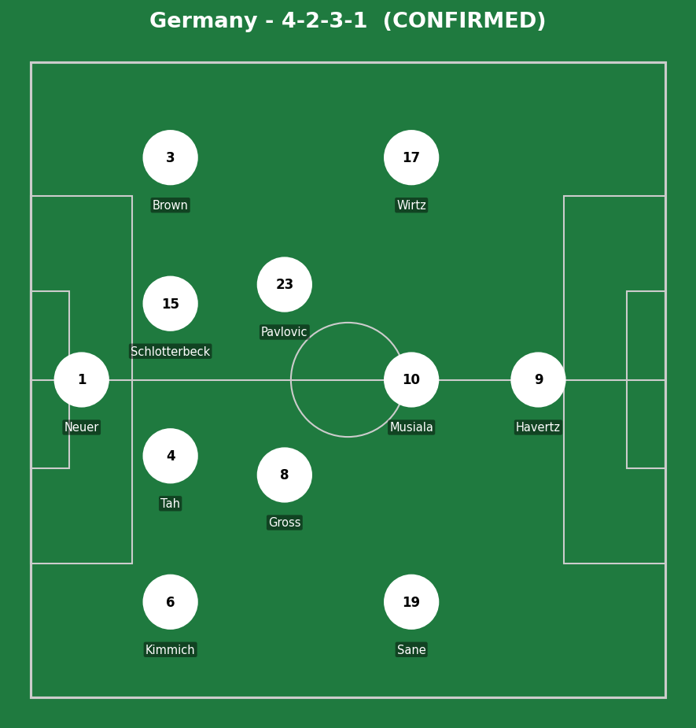
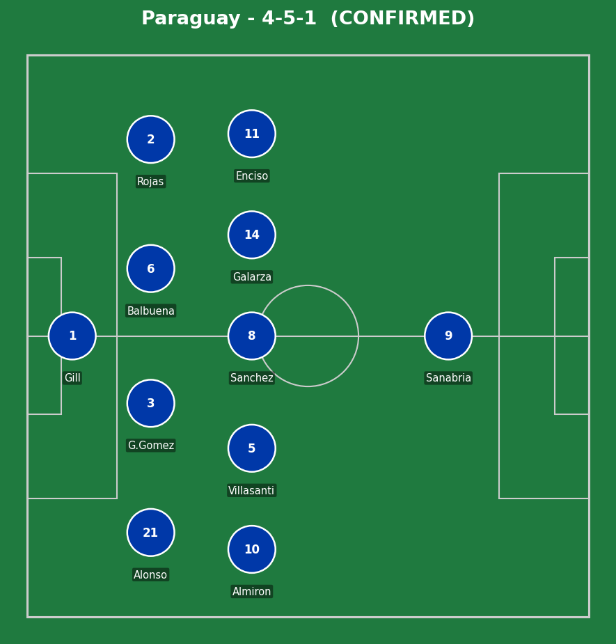
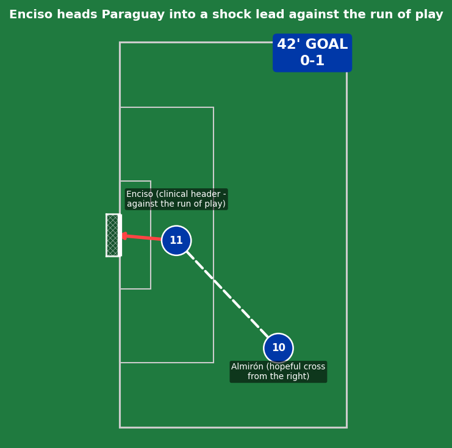
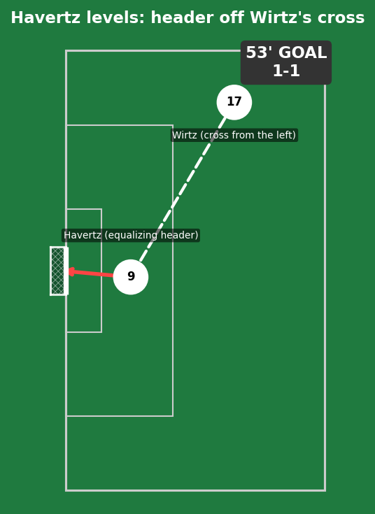
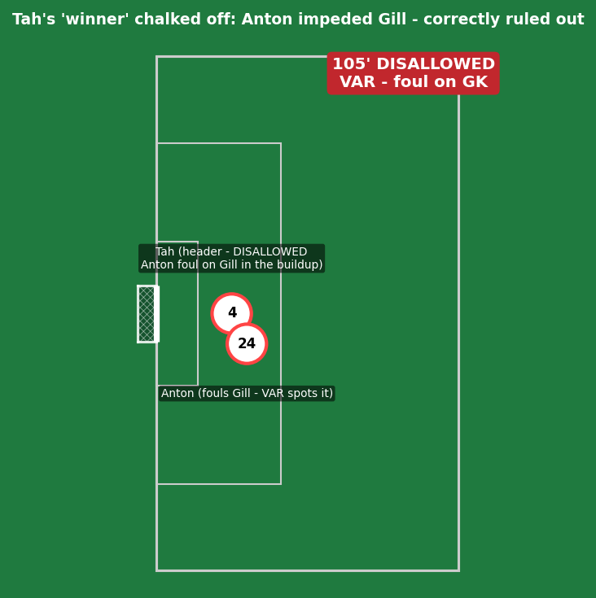
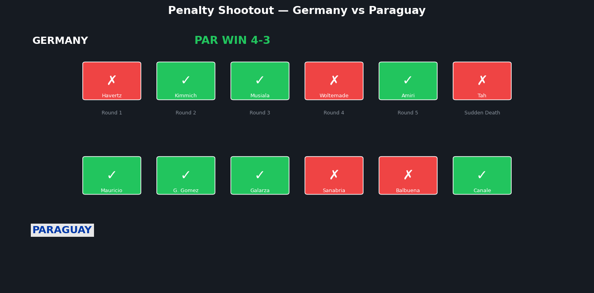
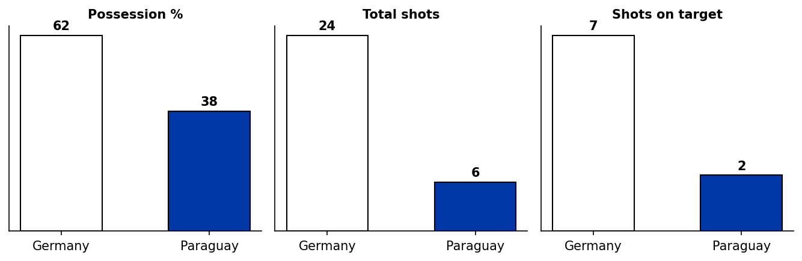
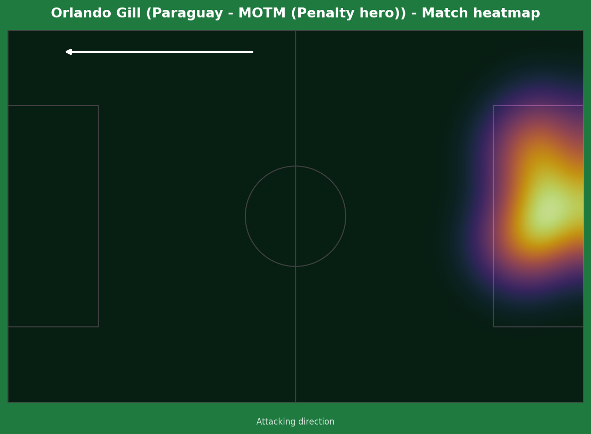
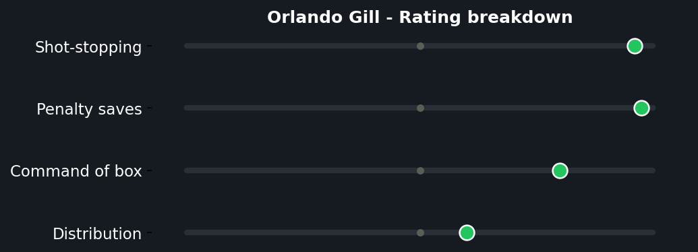

Germany dominated almost every measurable statistic across 120 minutes and still could not beat Paraguay. Julio Enciso headed the underdogs into a shock half-time lead from Miguel Almirón's cross, against the entire run of play. Havertz leveled with a header of his own eight minutes into the second half, and Germany pushed relentlessly for a winner — creating 24 shots, seeing a Tah goal correctly ruled out by VAR in extra time for Waldemar Anton's foul on goalkeeper Orlando Gill, and having a handball appeal waved away. None of it produced a second goal. In the shootout that followed, Gill saved from Havertz and Woltemade, Neuer kept Germany alive by saving Sanabria and Balbuena's efforts, but Jonathan Tah skied his attempt in sudden death and José Canale converted the winning penalty to complete one of the greatest World Cup upsets in history.


Germany (4-2-3-1): Neuer; Kimmich, Tah, Schlotterbeck, Brown; Gross, Pavlovic; Sane, Musiala, Wirtz; Havertz. Paraguay (4-5-1): Gill; Alonso, G. Gomez, Balbuena, Rojas; Almirón, Villasanti, Sanchez, Galarza, Enciso; Sanabria.
Paraguay's gameplan was clear from the first whistle and executed almost flawlessly for 120 minutes - a disciplined, narrow 4-5-1 that ceded possession entirely and organized specifically to deny Germany the space inside and behind the defensive line that their front four (Sane, Musiala, Wirtz, Havertz) needed to create. The numbers (62-38 possession, 24-6 shots) tell the story of a team that accepted being dominated on the ball in exchange for total defensive compactness.
Germany's failure wasn't tactical - it was a finishing problem. Orlando Gill made seven saves across 120 minutes, several of them genuinely important, including a crucial stop on Havertz's late second-half chance when a goal there would almost certainly have ended the contest. Germany also had a Tah header from a corner correctly disallowed for a Waldemar Anton foul on Gill - not a refereeing controversy, a correct call that nonetheless further compounded their frustration.
The key tactical moment wasn't a goal or a save - it was Paraguay's substitution of Enciso at the 57th minute (forced by a muscular injury) removing their only real counter-attacking outlet just as Germany's pressure was building. It meant Paraguay had to rely even more on Gill and defensive organisation alone for the entire second half, extra time, and into the shootout. That they held out is the real story of the night.

Completely against the run of play - Germany had controlled the entire first half without creating a clear chance, and Paraguay's goal came from their first meaningful delivery into the box. Miguel Almirón's cross from the right was described as "hopeful" by multiple reports; Enciso's header was anything but. Finding a gap between Schlotterbeck and Tah with real precision, heading firmly beyond Neuer's reach - clinical conversion of a half-chance Germany created the space for entirely by pushing their own defensive line up too high while chasing an opener.

A well-worked set-piece routine rather than a moment of individual brilliance - Florian Wirtz's delivery from the left was precise, and Havertz's run to the near post created just enough separation from his marker to generate a clean header beyond Gill. No Paraguay defensive error to point to; Germany simply won an aerial duel against a team that had defended everything else impressively. The goal came at exactly the time when Germany's pressure felt most likely to produce something.

The most dramatic moment of a match full of them - Tah headed in from a corner and the German celebration had barely started before VAR intervened. The review confirmed Waldemar Anton had pushed, held, or impeded Gill as he attempted to deal with the delivery, preventing the goalkeeper from making a realistic save. A correctly disallowed goal - the letter of the law is clear on goalkeeper protection at set pieces - but an extraordinarily cruel blow at exactly the moment Germany appeared to have the match won.

Havertz (miss): the captain and best player stepped up first and missed - a low-to-left effort Gill read perfectly and saved comfortably. Arguably the moment that decided the entire shootout; a Germany captain missing the opening kick is a psychological blow the remaining takers carry into every subsequent spot kick.
Woltemade (miss): with Paraguay leading 3-2 and Germany needing to convert, the substitute crumbled - Gill saving again, putting Paraguay one score from elimination. The weight of Havertz's earlier miss clearly weighing on a squad that hadn't planned for this.
Sanabria (miss, Paraguay): the one moment that reopened the door - dragging his effort wide, keeping Germany alive when elimination looked certain.
Balbuena (saved by Neuer): the veteran kept Germany in it again, producing a diving save that sent it to sudden death and gave the stadium a genuinely shocking twist.
Tah (miss, sudden death): the man whose goal had been disallowed in extra time stepped up in sudden death and skied his penalty over the bar. The symmetry is painful - the goal taken away, then the chance to stay alive also gone. José Canale converted the next penalty to send Paraguay through in one of the most extraordinary endings a World Cup match has ever produced.

A 24-6 shot count in Germany's favor is about as lopsided as knockout-round football gets without producing a winner - and yet here we are. Gill made seven saves, Germany missed three penalties, and Paraguay advance to the Round of 16.


An extraordinary individual performance across 120 minutes and a penalty shootout - seven saves in regulation and extra time (including the crucial stop on Havertz's late second-half chance), then two more in the shootout from Havertz and Woltemade that directly kept Paraguay in the contest until sudden death. The penalty-save rating is the standout number here: saving two of five in a shootout is well above even elite goalkeeper benchmarks, and both saves came at pressure moments when conversion would have eliminated Paraguay outright. Without this performance, Germany advance comfortably - it's as simple as that.
Illustrative reconstruction based on known event locations, not raw GPS tracking data.
Wirtz - 7.0 (assist, creative throughout)
Musiala - 6.5 (booked, converted penalty)
Havertz - 5.0 (goal, missed first penalty)
Tah - 4.5 (disallowed goal, missed SD pen)
Gill - 9.5 ⭐ MOTM (7 saves, 2 penalty saves)
Enciso - 8.0 (clinical goal, injured off)
G. Gomez - 7.5 (organized, converted pen)
Canale - 8.0 (winning penalty in SD)
Paraguay advance to face the winner of France vs Sweden. Germany's 2026 World Cup ends here - their earliest exit since 2018, and arguably the most painful in their entire tournament history.
💬 Reactions & Comments